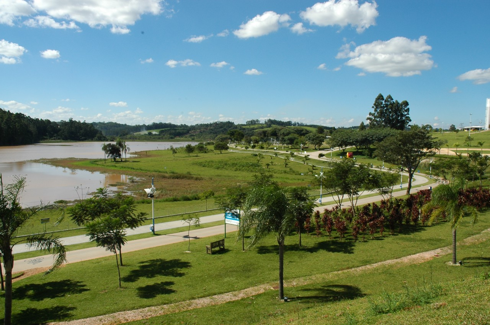
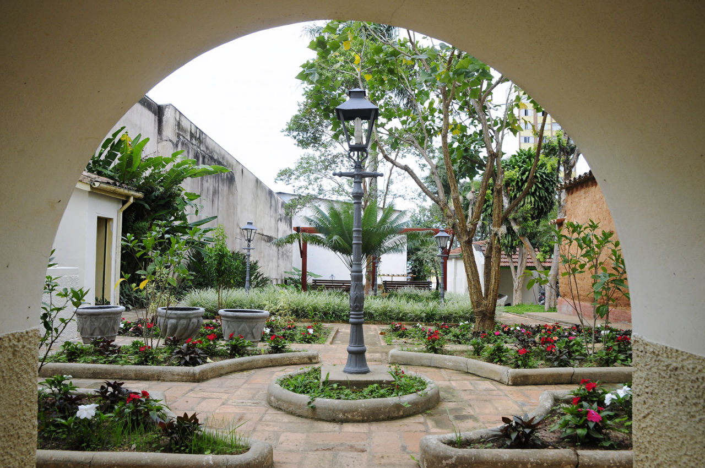
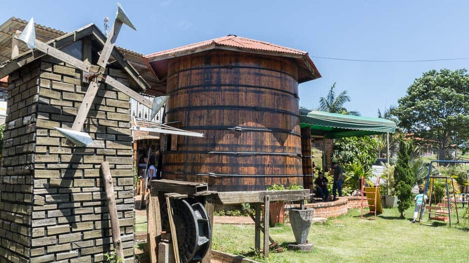

Jundiaí, localizada entre São Paulo e Campinas, é reconhecida por sua qualidade de vida, infraestrutura e pela produção de uvas e vinhos, que marcam sua identidade cultural. A cidade equilibra modernidade e natureza, sendo conhecida também como “Terra da Uva”.
Parque da Cidade – Ampla área verde com lagos, trilhas e espaços para prática esportiva.
📍 Endereço: Rodovia João Cereser, km 66 – Jundiaí – SP.
Museu Histórico e Cultural Solar do Barão – Antiga residência do Barão de Jundiaí, preserva a história local com exposições.
📍 Endereço: R. Barão de Jundiaí, 762 – Centro, Jundiaí – SP.
Rota da Uva – Região turística com vinícolas, adegas e restaurantes típicos.
📍 Endereço: Estrada da Uva – Caxambu, Jundiaí – SP.
